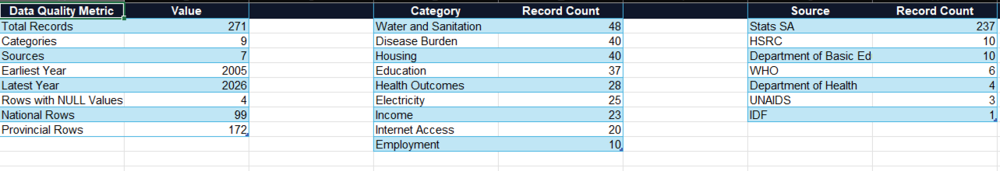

Best Overall Province
Western Cape ranks highest in the composite social health index, supported by high literacy, lower poverty, strong water access, and lower recorded HIV prevalence in the supplied dataset.
The Social Drivers of Health in South Africa
A public health analytics case study investigating how social and economic conditions influence health outcomes across South African provinces.

Beyond Hospitals investigates how education, poverty, employment, infrastructure, housing, service access, disease burden, and other social conditions relate to health outcomes across South Africa.
Multiple datasets were integrated into a unified analytical framework to compare provinces and evaluate how factors such as literacy, poverty, unemployment, water access, and social conditions relate to provincial health outcomes.
The project demonstrates advanced data integration, public sector analytics, evidence based decision making, and executive level reporting.



Western Cape ranks highest in the composite social health index, supported by high literacy, lower poverty, strong water access, and lower recorded HIV prevalence in the supplied dataset.
Eastern Cape and Limpopo show elevated structural pressure through high poverty, high grant dependency, and weaker basic service access.
South Africa shows a dual disease burden where HIV and TB remain major concerns while lifestyle linked conditions are also visible in mortality data.
Target health interventions with education, water, sanitation, and poverty reduction programmes rather than treating disease burden in isolation.
Build province level monitoring dashboards for health outcomes, disease burden, and social drivers using verified government data pipelines.
Prioritise Limpopo and Eastern Cape for infrastructure and poverty related interventions, while using Western Cape and Gauteng as benchmarks for service access and socioeconomic resilience.
Back to Projects